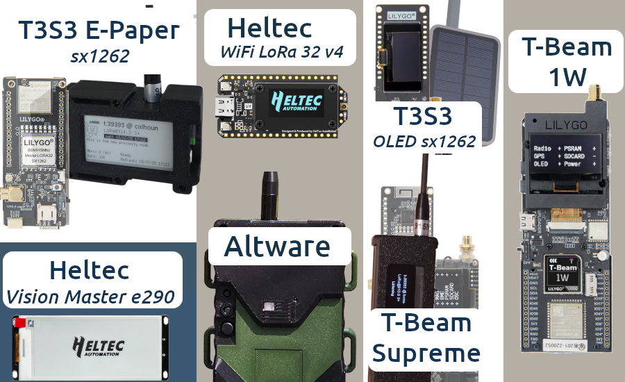
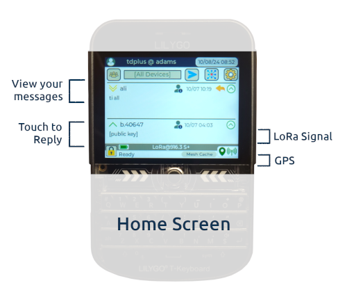
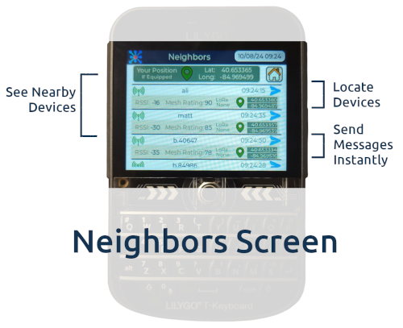
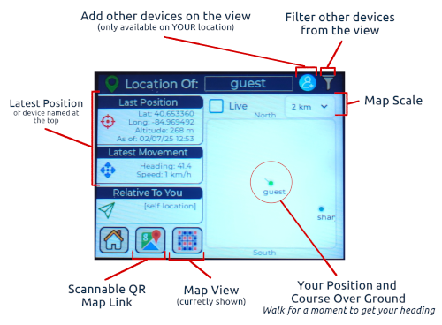
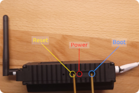
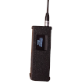
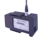
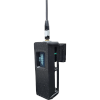
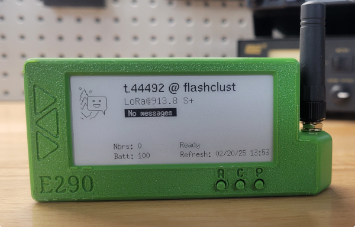
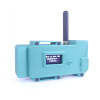

ChatterBox Mesh Node Firmware
|
Where are you located? |
If you are in the USA, choose the USA version. Otherwise, choose the Non-USA version. Use the same slection for all of your devices! | Node: 1.8.7 (04/30/2025) Comm: 1.8.9 (05/01/2025) |
Note: The ChatterBox mesh node firmware is a licensed product, but the node firmware is currently free for download.
|
By downloading this firmware, you are agreeing to the terms, agreeing to abide by all laws and regulations while using this firmware, and agreeing to hold harmless the developer, Altware Development LLC. Altware Development LLC is not responsible for any data loss or other issues that might arise with with your device before, during, or after flashing. Unless you agree to those terms, don't use this tool or download our firmware. |
|
|
1. Recommended (not required) - For all but Heltec, SD cards may be used if you choose. SD cards must be compatible (not all are). |
|
|
If you have any questions, consult the device seller or builder. |
After connecting your device and putting it in "boot mode", select it from the list below. |
|
 |
Full-featured secure mesh nodes within a private cluster. This is also the firmware for proximity / relay nodes.
Broadcast-only/read-only nodes OR open channel nodes. These do not support remote commands.
|
|
Alternative Instructions: If you know what you are doing and want to install mesh node firmware
using a different install tool, you may download the pre-built binaries here (USA):
GPS Node E-Paper Mini Node Solar Node Heltec E290 Node Anon GPS Node E-Paper Anon Mini Node Anon Mini Node Heltec E290 Anon Node
Alternative Instructions: If you know what you are doing and want to install mesh node firmware
using a different install tool, you may download the pre-built binaries here (Non-USA):
GPS Node E-Paper Mini Node Solar Node Heltec E290 Node Anon GPS Node E-Paper Anon Mini Node Anon Mini Node Heltec E290 Anon Node |
|
|
   |
||||||||||||||||||||||||||
1. If using an SD card (recommended), ensure you have a compatible card installed |
||||||
| These devices ARE VERY PICKY about SD cards. Consider buying a new SD card from the known compatible list. SD cards are cheap, and your time is not. The cards on that list typically work right out of the box. However, if your device seems to have trouble using the SD card (gets stuck mounting/decrypting), reformat the card using these instructions. | ||||||
2. Open a supported browser |
||||||
| You must be using a "standard" browser, such as Chrome, etc. | ||||||
3. Plug your device into a USB connection |
||||||
| IMPORTANT: You must be using a good quality data transmission cable, not just a power cable. I use these. | ||||||
4. Put the device in "boot mode" |
||||||
|
 |
|||||
5. Use the Flashing Tool to execute the flash |
||||||
|
When prompted, select the USB port that is connected to your device.
The firmware flashing tool should properly recognize the device, and you should be able to click through the prompts to complete the install.
If it fails or of your device doesn't come back on properly after the flashing, it doesn't mean your device is destroyed, just repeat the steps
carefully again from start to finish, and make sure you select the proper device.
For instance, if you have a T-Beam Supreme and you select to install the Heltec firmware, the flashing tool will happily install the wrong firmware, and then your device won't boot. It's no problem, just repeat the instructions with the correct options. |
||||||
6. Restart the device |
||||||
| The flashing tool doesn't normally restart the devices properly, so wait for the flasher to say it's done, then disconnect your device, then power it off and back on. | ||||||
| ChatterBox communicators and nodes can be assembled using mostly (or all) components you can purchase from Amazon, Ali Express, and other sources. |
|
Custom Communicator
|
GPS Node

|
E-Paper Mini Node

|
||||||||||||||||||||||||
|
Proximity/Relay GPS Node

|
GPS Relay Node
|
Solar Node
|
||||||||||||||||||||||||
|
Proximity/Relay Paper Node
|
Heltec Vision e290 Paper Node

|
Mini Node

|
||||||||||||||||||||||||